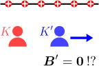
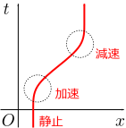
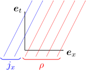

5.ガリレイ変換の矛盾
電磁場をガリレイ変換すれば、時間変化する電磁場の法則が得られそうである。しかし実際には、ガリレイ変換は、矛盾を引き起こす。
時間変化する電荷・電流密度の場合を考えたい
電磁場中を運動する荷電粒子の運動方程式は、第3章で述べたように
しかし、これで終わりではない。これまでは、静的な電荷・電流密度
時間に依存する
この章では、「電磁場のガリレイ変換」を実際に計算する。その結果、なんと、理論に矛盾が生じることが分かる。その後、電荷・電流密度
電 磁 場 の ガ リ レ イ 変 換 電 荷 ・ 電 流 密 度 の 変 換 則 （ マ ク ス ウ ェ ル 方 程 式 か ら ） の 変 換 則 （ 荷 電 粒 子 の 世 界 線 か ら ）
5.1電磁場
電磁場のガリレイ変換：式(
静電磁場の系
この
式(

まず、式(

一方、式(
ただし、この矛盾を実験的に検証するのは非常に難しい。というのも、通常の実験で作り出せる
5.2電荷・電流密度
ガリレイ変換と電磁場の法則は矛盾を抱えていることが分かった。もう少し詳しく見る必要がありそうである。前節では電磁場の変換則について議論したので、この節では、電荷・電流密度の変換則を、特殊な場合について計算し、前節の問題を引き継いでいることを見る。
さて、特殊な場合というのは、
第4章で見たように、静電磁場
電荷・電流密度の変換則：式(
実際に式(
この式はやはり、前節で述べた奇妙な点を引き継いでいる。第1式は、慣性系によって電荷密度が変化することを示している。特に、
5.3
電荷・電流密度

まず、右図のように、時空図を描く。時空図は、横軸・縦軸にそれぞれ

次に、電荷分布がある場合、それを電子の集合であるとみなすと、時空図は無数の電子の世界線で覆われることになる。（電子でなくてもよいが、思考実験としては電子を考えておけば十分である。）さて、電荷密度
同様に、電流密度
上記は、空間が1次元の場合であるが、多次元の場合にも容易に拡張できる。実際、2次元空間の場合は
基底ベクトルの変換則：式(
上記のように考えて何がうれしいかというと、このように幾何学的に考えることで、座標変換のもとで単位ベクトル
ただし、電子の電荷が、速度によって変化してしまうと、それを考慮に入れる必要が出てくる。ここでは、電子（などの荷電粒子）の電荷がその速度に依存しないことが実験的に確認されているとする（電荷が速度に依存すると、電荷が保存しなくなる）。そうすると相対性原理により、電子の電荷は、速度に依存せず、どの慣性系から見ても同じ値になる。
まず、単位ベクトルの変換則が知りたい。時間・空間座標
【5.3-注1】単位ベクトルの変換則：式(
座標系
導出
右図のように、「時空上の点
デカルト座標→極座標のように、非線形な座標変換の場合、
後は、単位ベクトルが作る平行六面体を通過する電子の世界線の数がどのように変化するかが分かれば、目的である
簡単のため、まず2次元時空を考える（時間1次元と空間1次元）。基底ベクトルを通過する世界線の数を考えているのだが、まず一般的に、任意の微小ベクトル
即ち、
空間が3次元（4次元時空）の場合は、同様に